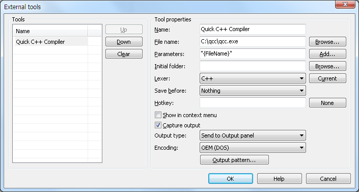
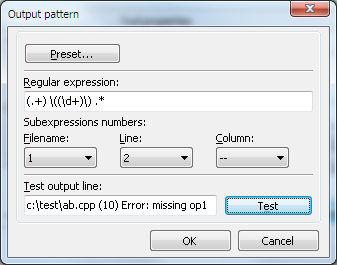
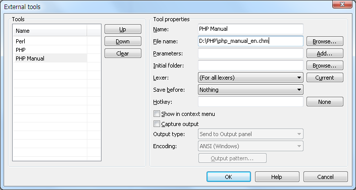
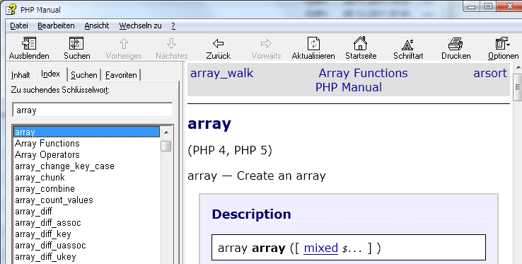

The external tools dialog "Tools -- Customize external tools" allows to create menu items to call external applications:
For console-based applications it's possible to have several forms of integration: show output in Output panel; copy output to new file; replace selection with output etc. To use these choices, you must check "Capture output" option and then use "Output type" dropdown.
All external tools' items are added to the "Tools" submenu of main menu, and also (optionally)
to the editor context menu.
The maximal number of external tools is currently 16.
In "File name" and "Parameters" fields of external tools configuration the following macros are allowed. Most of them can be inserted by a button near "Parameters" field.
|
{FileName} {FileDir} {FileNameOnly} {FileNameNoExt} {FileExt} |
File properties for currently focused group:
|
{FileName2} {FileDir2} etc |
File properties for opposite group. (If current group is 1st - for group 2, if 2nd - for group 1, else - empty strings.) |
{FileNameN1} - {..N6} {FileDirN1} - {..N6} etc |
File properties for groups 1...6. |
|
{ProjectDir} {ProjectWorkDir} {ProjectMainFileName} {ProjectMainFileDir} |
Project properties:
|
| {CurrentWord} | Word at current editor caret. (Can be empty.) |
| {CurrentLine} | Entire current editor line. (Can be empty.) |
| {CurrentLineNum} | Number of current editor line (1-based). |
| {CurrentColumnNum} | Number of current editor column (1-based). |
| {SelectedText} | Current editor selection text. (Can be empty.) |
| {SelectedTextForWeb} | Current editor selection text, adapted for internet URL. E.g. selection "some word info" will give string "some+word+info". (Can be empty.) |
|
{SelectionFileName} {SelectionFileNameNum} |
Path of temporary file, which contains current editor selection (Unicode content). Second variant: make numbered filename like "SynwSel_10.txt" to not overwrite prev copy. |
|
{SelectionFileNameAnsi} {SelectionFileNameAnsiNum} |
Path of temporary file, which contains current editor selection (ANSI content). Second variant: make numbered filename. |
| {ContentFileName} | Path of temporary file, which contains current editor text (Unicode content). |
| {ContentFileNameAnsi} | Path of temporary file, which contains current editor text (ANSI content). |
| {Interactive} | Some text - it's prompted to type before tool execution. |
| {InteractiveFile} | Some file name - it's prompted to select before tool execution. |
| {InteractiveDir} | Some folder name - it's prompted to select before tool execution. |
| {SynDir} | SynWrite property - installation folder path. |
| {SynIniDir} | SynWrite property - settings files ("Syn*.ini") folder path. |
| {SynDrive} | SynWrite property - drive letter with ":" char, of installation path. |
For example, we have a C++ file "c:\test\ab.cpp" and want to use C++ Compiler "qcc.exe" as external tool. The configuration dialog should look like this:

Now when you call this tool, the following command is executed:
"C:\qcc\qcc.exe" "c:\test\ab.cpp"
Instead of opening a console window, all output is captured by SynWrite and written into output window.
You may see compiler's strings like these:
c:\test\ab.cpp (10) Error: missing op1 c:\test\ab.cpp (11) Error: missing op2 c:\test\ab.cpp (12) Error: missing something
You see our compiler has found some errors in our example file. For troubleshooting SynWrite has option to "navigate" to affected error lines. That means you can jump to error position in source code file. To make this navigating work, we have to define "output pattern" for this external tool. We should make a regular expression denoting output lines. It can be:
.+ \(\d+\) .*
Then we should surround parts of regular expression in parentheses ( ). Surrounded parts: 1st part ".+" is a filename, 2nd part "\d+" is error line number.
(.+) \((\d+)\) .*
This is the regular expression we should enter in the "Regular expression" field of dialog. For "filename" field we must specify "1" (as 1st subexpression is filename), for "line" field we specify "2" (as 2nd subexpression is line number), for "column" field "--" can be left. The "Output pattern" dialog should now look like this:

If you have specified all the fields, test them: enter a test line in the "Test output line" field and press the "Test" button.
Note: In some cases "filename" subexpression number can be left as "--". This is needed when a tool doesn't write filenames to the output, and filename is constant for the whole tool output.
If you have made your "Output pattern" configuration, then you can save it to a file (to share it). "Output pattern" dialog has buttons "Load preset" and "Save preset", use the second one to save your preset to a file. You'll be prompted for two strings: a) tool name, b) tool executable filename (without path). You'll see saved preset filename in a messagebox.
External tools gives you also fast access to CHM and HLP Files. SynWrite opens these files for you and uses the current word or text selection as search text in your helpfile. It's good if you work with syntax manuals like official "php_manual_en.chm" for PHP language. You mark a word like "array" in SynWrite and call this CHM file. The manual will open the pages you are looking for.
First you create a new external tool with your chm or hlp file as filename.

Now select or set the cursor on the word "array" in editor window and call your new created item "Tools -- PHP Manual". The CHM file will open and you see all suitable pages with information about your word "array".

You may also call web sites with given keyword. As an example, here's how to set up calling of official help on HTML tags:
Now place caret on any HTML tag name and call command "Tools -- Tag Help".
You may call JavaScript (JS) scripts using WSH standard functionality. Here's how to set up properties of a tool which needs a filename as parameter: